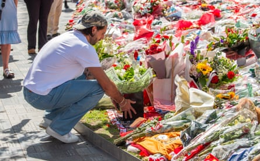
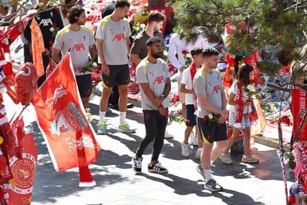

O utside Anfield, the red sea of tributes to Diogo Jota and André Silva has continued to grow this week along with questions over whether Liverpool could play at Preston on Sunday, their first game since the brothers’ tragic loss. Inside Anfield, and specifically a grieving Liverpool dressing room, there was no major debate over the pre-season friendly. The Premier League champions intend to honour their teammate in the best way they know how.
It will be only 10 days since the deaths of Jota and Silva when Liverpool appear at Deepdale for what is certain to be a hugely emotional occasion, and less than two days since the club retired Jota’s No 20 shirt . There was no pressure on Liverpool to honour a friendly that could have been cancelled easily – unlike their commitment to a tour of Hong Kong and Japan at the end of the month – but at no point was that option relayed to Preston.
Delaying a first appearance since the accident until they play Milan in Hong Kong on 26 July or Yokohama F. Marinos at the Nissan Stadium four days later was not considered a suitable alternative by Liverpool’s players. The consensus was to get out and play, albeit while being acutely aware of how difficult the first stepswill be.
Their reactions to hearing You’ll Never Walk Alone before kick-off on Sunday and seeing tributes to Jota and Silva at Deepdale will be broadcast live. ITV agreed a deal in principle to televise the game last month and finalised the decision days before the brothers were killed in north-western Spain.
Liverpool’s Dominik Szoboszlai lays flowers with the other tributes for his former teammate Diogo Jota at Anfield.Photograph: Peter Powell/EPA
Those at Deepdale and watching on television will be witnessing a club in mourning, to use the words of Liverpool’s chief executive, Billy Hogan. The past week, said Hogan, “has been just absolutely devastating”. The club are also having to balance the professional obligations of preparing for a new season with the personal tragedy that has enveloped players, coaches and staff. They have lost a much-loved friend at the age of 28 and someone who was a positive, vocal presence in the dressing room. Jota was a player who managed to enforce standards at Liverpool while lifting the atmosphere.
The new signings Florian Wirtz , Jeremie Frimpong, Milos Kerkez and Giorgi Mamardashvili were due to report for the usual pre-season tests last Friday, with their teammates starting back from Tuesday onwards, but all football-related activity was placed on hold once the deaths of Jota and Silva were confirmed. Some did report on Tuesday but the full squad were not reunited at the training ground until the end of this week, having been given time to process an unimaginable loss. It is one that some may never process.
Sombre training sessions have been followed by visits to the mass of bouquets and scarves left in tribute to Jota and Silva behind the main stand at Anfield. The whole first team attended the scene on Friday in the company of Jota’s wife, Rute Cardoso, and parents, Isabel and Joaquim. Andy Robertson, one of Jota’s closest friends at the club, had led the way earlier in the week with his tribute to “MacJota”, so called by the Scotland captain given the striker’s love of darts, horse racing and British life. The former players Steven Gerrard and Adam Lallana were also among the thousands who have paid their respects at Anfield.
Arne Slot and his wife, Mirjam, also left an emotional tribute and took time to read many of the messages on 97 Avenue. “Diogo, we had the same dream and we fulfilled it together. André and yourself will for ever be in our hearts,” read the tribute from the Slot family. Jota’s character, along with his ability as a footballer, were eloquently captured in a message from Michael Edwards, the chief executive of football at Liverpool’s owner, Fenway Sports Group, who oversaw Jota’s £41m move from Wolves in 2020. “Down to earth, determined, a great finisher and, above all, loved and respected by all who knew him,” Edwards wrote. “He gave everything to the team, with quiet strength and unwavering humility. His impact reached far beyond the pitch.”
Luis Díaz and Alisson returned to pre-season training on Merseyside via Jota’s home city of Gondomar, near Porto. The Liverpool forward and goalkeeper were unable to attend the brothers’ funeral on Saturday because they were in Colombia and Brazil respectively. However, along with some of Jota’s Portugal teammates including Rúben Neves, José Sá and Diogo Costa, and the Penafiel team that Silva played for, they attended a seventh-day mass in memory of the siblings at the Igreja Matriz de Gondomar on Wednesday. Players who had extended international commitments this summer are unlikely to be considered for Sunday’s game.
Liverpool players including Mohamed Salah (centre) view the tributes to Diogo Jota outside the Main Stand at Anfield.Photograph: Peter Powell/EPA
Liverpool and Preston will pay several tributes to Jota and Silva at Deepdale. The home team will lay a wreath close to the Liverpool fans, there will be a rendition of You’ll Never Walk Alone and a minute’s silence before kick-off, and both sets of players will wear black armbands. Fans had called for Liverpool to retire the No 20 shirt and the club did so after consulting his family.
Hogan said after paying his respects outside Anfield on Wednesday: “I think the most important thing in this process is that we want to make sure we are respecting the family … Obviously they have gone through an unimaginable situation over the course of the last several days. We certainly will, obviously, remember both André and Diogo.”